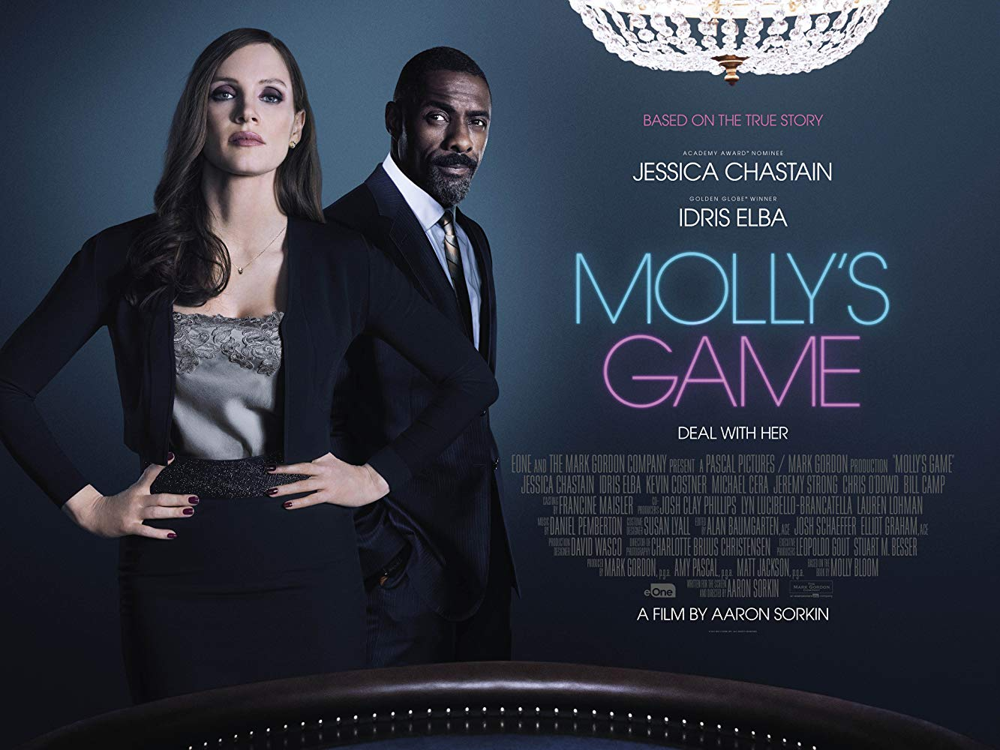
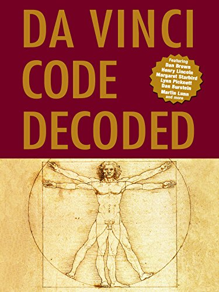

-
Miss Sloane
- Genre:Mystery&Suspense
- Release date:Mar 21,2017
- Description:In the high-stakes world of political power-brokers, Elizabeth Sloane (Jessica Chastain) is the most sought after and formidable lobbyist in D.C. Known equally for her cunning and her track record of success, she has always done whatever is required to win. But when she takes on the most powerful opponent of her career, she finds that winning may come at too high a price.
-
Midnight Sun
- Genre:Drama,Romance
- Release date:Mar 23,2018
- Description:MIDNIGHT SUN is a romantic tearjerker about 17-year-old Katie Price (Bella Thorne), sheltered at home since childhood with a rare genetic condition, a life-threatening sensitivity to sunlight. Having only her father Jack (Rob Riggle) for company, Katie's world opens up after dark when she ventures outside to play her guitar. One night, her dreams come true when she's noticed and asked out by her longtime crush Charlie (Patrick Schwarzenegger), whom she's secretly watched from her bedroom window for years. As they embark on nightly summer excursions, Katie's risk to sunlight grows and she's presented with the gut-wrenching dilemma of whether she can live a normal life with her newfound soul mate.
-
Molly's Game
- Genre:Drama
- Release Date:Apr 10, 2018
- Descpripton:MOLLY'S GAME is based on the true story of Molly Bloom, an Olympic-class skier who ran the world's most exclusive high-stakes poker game for a decade before being arrested in the middle of the night by 17 FBI agents wielding automatic weapons. Her players included Hollywood royalty, sports stars, business titans and finally, unbeknownst to her, the Russian mob. Her only ally was her criminal defense lawyer Charlie Jaffey, who learned that there was much more to Molly than the tabloids led us to believe.

-
Da Vinci Code Decoded
- Genre:Documentary
- Release Date:Nov 2,2004
- Descpription:This documentary exploration of Dan Brown's novel The Da Vinci Code, answers questions: What exactly was Leonardo da Vinci trying to tell us in his coded paintings? Was Jesus married to Mary Magdalene? Who were the Knights Templar? What is the secret of the mysterious church at Rennes-le-Château? What is the Priory of Sion? What secret did the real life Saunière know that threatened the Church? What are the Gnostic Gospels? Did Roman emperors rewrite the New Testament to control the population?
